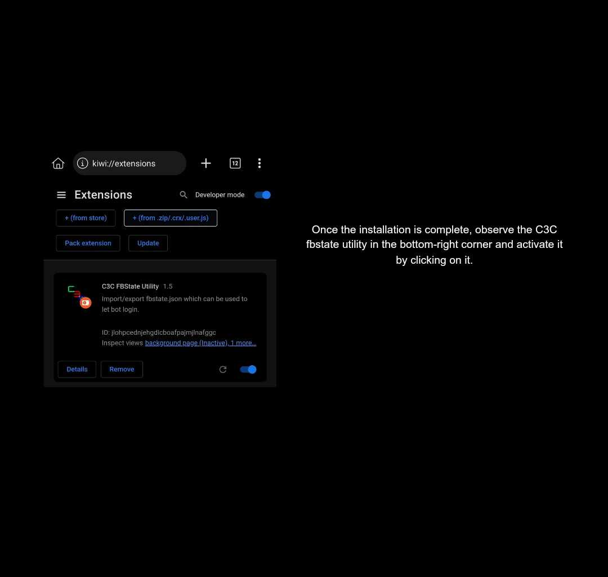

𝐒𝐓𝐄𝐏 𝐁𝐘 𝐒𝐓𝐄𝐏 𝐆𝐔𝐈𝐃𝐄 𝐅𝐎𝐑 𝐀𝐏𝐏𝐒𝐓𝐀𝐓𝐄 𝐆𝐄𝐓𝐓𝐄𝐑
1. Install the Kiwi Browser from the Google Play Store and proceed to launch the application.

2. Upon launching the app, navigate to the search function and enter the following link: https://github.com/c3cbot/c3c-fbstate/archive/refs/tags/1.5.zip

3. Once entered, a prompt will appear instructing you to download the file; proceed by clicking the download option.

4. After completing the download, tap the three dots in the upper-right corner, then select the "Extensions" option.

5. In the Extensions menu, enable Developer Mode, then click the "+" button to add the extension from either a zip file, crx file, or user.js file.

6. Locate the previously downloaded zip file and click on it to initiate the installation process.

7. Once the installation is complete, observe the C3C fbstate utility in the bottom-right corner and activate it by clicking on it.
8. Upon activation, navigate to Facebook.com using the Kiwi Browser and log in your account.

9. After logging in, access the menu by clicking the three dots in the upper right corner, scroll down, and locate the C3C fbstate utility.

10. You'll be redirected to another page; locate the "Copy Clipboard" option and click it to copy your cookies for further use.